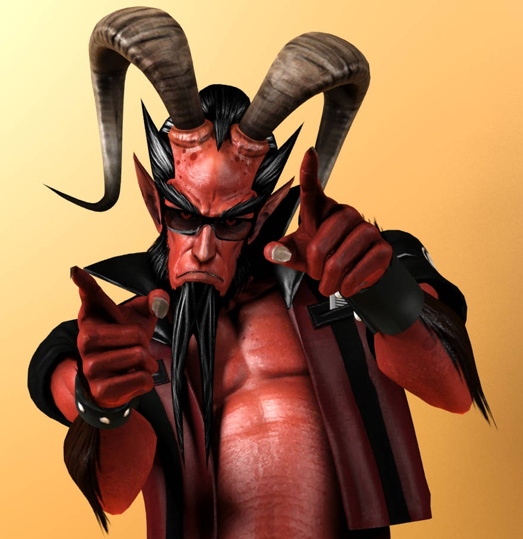
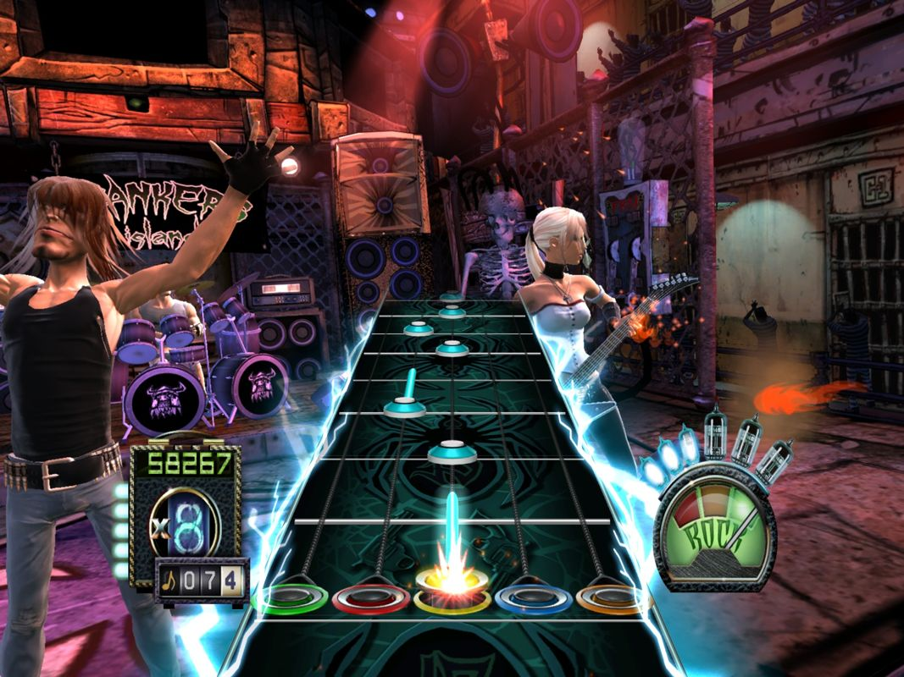
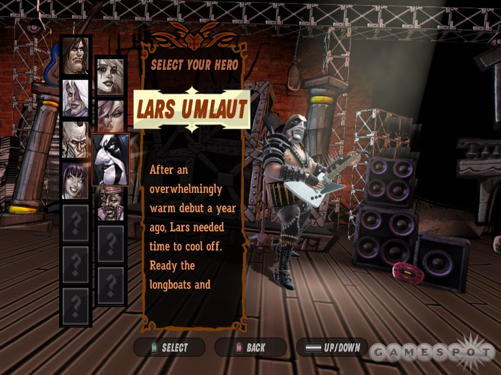

Guitar Hero III Legends Of Rock
Resumo da Historia
Guitar Hero III: Legends of Rock é um jogo eletrônico de ritmo musical desenvolvido pela
Neversoft e publicado pela Activision. Foi lançado mundialmente em outubro de 2007 para as plataformas
PlayStation 2, PlayStation 3, Wii e Xbox 360. As versões para PlayStation 2 e Wii tiveram o auxílio,
respectivamente, de Budcat Creations e Vicarious Visions, enquanto a Aspyr Media se encarregou de produzir
e desenvolver as versões para Microsoft Windows e Mac OS X, que foram lançadas no final de 2007. O jogo é
o terceiro título da série principal Guitar Hero, e o quarto da franquia.
Em Guitar Hero III, o jogador controla uma banda iniciante que faz um contrato com Lou, um empresário misterioso
que depois de levar o grupo ao estrelato revela ser o próprio Diabo. Os músicos, então, são forçados a batalhar contra
ele no submundo por suas almas.

Outros “chefões” são Slash (Guns N’ Roses) e Tom Morello (Rage Against The Machine), que depois de derrotados se
tornam personagens jogáveis, junto com outros 13 avatares que podem ser personalizados com roupas e adesivos para
suas guitarras.
A trilha sonora conta com mais de 70 canções que são bem mais “pesadas” com relação aos títulos anteriores,
como “Before I Forget” do Slipknot, “The Number of the Beast”, do Iron Maiden e “One”, do Metallica.
Trilha Sonora
Guitar Hero III: Legends of Rock apresenta 73 canções jogáveis;
- 3's & 7's "Queens of the Stone Age" "
- Anarchy in the U.K. "Sex Pistols"
- Barracuda "Heart"
- Before I Forget "Slipknot"
- Black Magic Womand "Santana"
- Black Sunshine "White Zombie"
- Bulls on Parade "Rage Against the Machine"
- Cherub Rock "The Smashing Pumpkins"
- Cities on Flame with rock and Roll "Blue Öyster Cult"
- Cliffs of Dover "Eric Johnson"
- Cult of Personality "Living Colour"
- The Devil Went Down to Georgia "Steve Ouimette"
- Even Flow "Pearl Jam"
- Guitar Battle vs. Slash "Slash"
- Guitar Battle vs. Tom Morello "Tom Morello"
- Helicopter "Bloc Party"
- Hit Me with Your Best Shot "Pat Benatar"
- Holiday in Cambodia "Dead Kennedys"
- Knights of Cydonia "Muse"
- Kool Thing "Sonic Youth"
- La Grange "ZZ Top"
- Lay Down "Priestess"
- The Metal "Tenacious D"
- Miss Murder "AFI"
- Mississippi Queen "Mountain"
- Monsters "Matchbook Romance"
- My Name Is Jonas "Weezer"
- The Number of the Beast "Iron Maiden"
- One "Metallica"
- Paint It Black "The Rolling Stones"
- Paranoid "Black Sabbath"
- Pride and Joy "Stevie Ray Vaughan"
- Raining Blood "Slayer"
- Reptilia "The Strokes"
- Rock and Roll All Nite "Kiss"
- Rock You Like a Hurricane "Scorpions"
- Sabotage "Beastie Boys"
- Same Old Song and Dance "Aerosmith"
- School's Out "Alice Cooper"
- The Seeke "The Who"
- Slow Ride "Foghat"
- Story of My Life "Social Distortion"
- Stricken "Disturbed"
- Suck My Kiss "Red Hot Chili Peppers"
- Sunshine of Your Love "Cream"
- Talk Dirty to Me "Poison"
- Welcome to the Jungle "Guns N' Roses"
- When You Were Young "The Killers"
Musicas bônus
- Avalancha "Héroes del Silencio"
- Can't Be Saved "Senses Fail"
- Closer "Lacuna Coil"
- Don't Hold Back "The Sleeping"
- Down 'n Dirty "L.A. Slum Lords"
- F.C.P.R.E.M.I.X. "The Fall of Troy"
- Generation Rock "Revolverheld"
- Go That Far "Bret Michaels Band"
- Hier kommt Alex "Die Toten Hosen"
- I'm in the Band "Hellacopters"
- Impulse "An Endless Sporadic"
- In Love "Scouts of St. Sebastian"
- in the Belly of a Shark "Gallows"
- Mauvais Garçon "Naast"
- Metal Heavy Lady "Lions"
- Minus Celsius "Backyard Babies"
- My Curse" "Killswitch Engage"
- Nothing for Me Here "Dope"
- Prayer of the Refugee "Rise Against"
- Radio Song "Superbus"
- Ruby "Kaiser Chiefs"
- She Bangs the Drums "The Stone Roses"
- Take This Life "In Flames"
- The Way It Ends "Prototype"
- Through the Fire and Flames "DragonForce"
Jogabilidade
A jogabilidade de Guitar Hero III: Legends of Rock é semelhante aos títulos anteriores da série. O jogador deve apertar os botões correspondentes às notas que deslizam para a parte inferior da tela, acompanhando, de forma simultânea e sincronizada, o ritmo da canção de fundo para obter pontos. Para executar as notas, utiliza-se um controlador em forma de guitarra, que possuí uma pequena barra que simula as cordas do equipamento e, ao mesmo tempo, o jogador deve pressionar os botões coloridos correspondentes para emular a execução dos trastes.[2] Se o jogador usar o controle padrão em vez do controle de guitarra, os botões corretos precisam ser pressionados, mas não é necessário dedilhar.[3] As notas, por sua vez, podem ser mantidas, aumentando a sua duração ao pressionar o botão do traste até que a nota esteja completa.
Personagens
Para os personagens, os desenvolvedores pretendiam manter a aparência cômica dos jogos anteriores, mas decidiram atualizar suas aparências com equipamentos e texturas realistas para aproveitar o nível mais poderoso de recursos gráficos dos consoles da sétima geração. Os programadores primeiro desenharam esboços de personagens para determinar a aparência e criaram uma roupa principal e outra alternativa para cada personagem. Posteriormente, malhas de baixo nível para cada personagem foram criadas, com detalhes adicionados ao ZBrush, resultando em personagens que, antes de serem escalados ao ambiente de jogo, tinham mais de seis milhões de polígonos. As textura e os sombreadores de pixel foram adicionados usando o trabalho anterior da equipe no Tony Hawk's Porject 8 para combinar com o estilo dos jogos anteriores de Guitar Hero. Ao contrário dos jogos de Tony Hawk, cada personagem do jogo recebeu um esqueleto único para combinar com suas variações de tamanhos e formas, permitindo que os animadores criassem movimentos únicos para cada personagens. Guitar Hero III: Legends of Rock apresenta três novos personagens inspirados em músicos reais: Slash, Tom Morello e Bret Michaels, cada um tocando uma ou mais canções de suas gravações anteriores. Todos os três foram trazidos para o jogo usando captura de movimento da Motion Analysis Corporation.
Cheats no Jogo
O Jogo de música tem cheats que permitem
melhorar a experiência do jogador e facilitar progresso
Cheats para Guitar Hero 3 Legends of Rock podem ser muito úteis para o jogador.
O jogo musical, que foi lançado em 2007 para PlayStation 2 (PS2), PS3, Xbox 360,
Nintendo Wii e PC, conta com uma enorme seleção de canções de rock e gêneros similares.
É possível jogar com uma guitarra de plástico – um controle neste formato, na verdade –,
e também ativar cheats e macetes que facilitam a vida do usuário durante as partidas.
Os códigos funcionam em todas as versões e são fáceis de ativar. Confira como usar
os cheats em Guitar Hero 3 e a lista, a seguir.
Vale lembrar que os códigos de cheat de Guitar Hero 3 são ativados levando em conta apenas
o controle de guitarra, que tem os mesmos comandos em todas as plataformas. Guitar Hero 3
também é compatível com controles tradicionais, mas os macetes são direcionados somente para
o joystick em formato de guitarra.
O Fim
Depois dessa versão, veio a queda. Com o gritante crescimento de Rock Band,
que lançou versões dedicadas a bandas como The Beatles e Green Day,
Guitar Hero foi ficando para trás. O desespero da Activision foi ficando cada
vez mais claro, na medida que jogos mal acabados eram lançados aos montes.
Um ótimo exemplo disso foi o ano de 2009, que teve nada menos do que quatro lançamentos,
todos amontoados entre os meses. Os jogos foram Guitar Hero: Metallica,
que é uma versão com faixas da idolatrada banda de trash metal; Guitar Hero: Smash Hits,
que traz uma coletânea com as melhores músicas das versões anteriores,
mas agora podendo ser tocadas em todos os instrumentos, e em faixas originais das bandas;
Guitar Hero: Van Halen, um dos piores da franquia, ''homenageando'' a banda norte-americana; e,
por fim, o principal lançamento do ano, Guitar Hero 5, que trouxe como inovação o modo Party Play,
que permite a entrada, saída, mudança de instrumentos e dificuldade no meio da música,
sem a necessidade de voltar ao menu principal do jogo. O jogo dispõe de pouco mais de 80 músicas,
e figuras famosas como o finado guitarrista e vocalista do Nirvana, Kurt Cobain.
Um dos grandes ''erros'' da série foi tirar o foco das linhas de guitarra.
Com a adição de vários instrumentos, músicas cada vez mais variadas foram
selecionadas, o que tornou tudo mais morno e casual, coisa que irritou
profundamente os jogadores hardcore da franquia, que queriam novamente
canções do calibre de Beast and the Harlot do grupo de metalcore Avenged
Sevenfold, e Through the Fire and Flames, a quase-impossível musica da
banda Dragonforce. A Activision e a NeverSoft ouviram os jogadores, e decidiram
escolher uma setlist mais baseada no rock n' roll, com mais foco nas guitarras.
Não que todos tenham sido um desastre total, mas a produtora pecou pelo exagero,
e explorou demais a fama da franquia, lançando jogos que, além de caros por contar
sempre com acessórios, não atingiam a qualidade de seus antecessores. Muitas versões terminaram encalhadas nas lojas,
e os jogadores começaram a pressionar os desenvolvedores por alguma inovação.
Depois de muita promessa finalmente foi lançado Guitar Hero: Warriors of Rock, mas infelizmente o jogo não foi bem recebido pela crítica especializada, e muito menos pelos jogadores. E eles bem que tentaram, mais nada conseguiu trazer a sensação de ''novidade'' dos três primeiros títulos. O jogo também não apresentou nada significantemente novo, e terminou não vendendo bem, inclusive, muito longe do esperado.
Assim se seguiram meses de silêncio, até o anúncio, a bomba. A Activision anuncia a descontinuação da série Guitar Hero, devido aos custos de licenciamento de músicas, e as baixas vendas nas últimas versões. A notícia repercutiu em sites, fóruns e comunidades, e causou tristeza e revolta nos antigos jogadores.